같은 저장소에서 돈이 새는 이유
이 플러그인이 겨냥하는 낭비는 턴마다 다시 내는 비용이에요. 화면의 막대를 보면 한 턴의 청구액이 지시문(파랑), 불러온 모든 도구(노랑), 지금까지의 대화(빨강)로 나뉘어요. 아래 세션 카드 세 장은 같은 구성이 세션마다 그대로 반복된다는 뜻이에요.
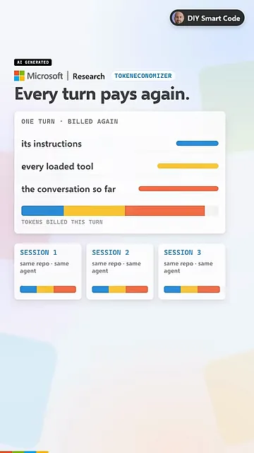
그래서 Microsoft Research와 UC(University of California) Berkeley가 만든 TokenEconomizer는 에이전트를 고치지 않아요. 모델도 코드도 그대로 두고, 그 저장소에서 이미 끝난 세션을 보고 배워요.
아래 그림의 맨 위 세 칸이 줄이려는 낭비예요. 저장소 다시 파악하기, 쓰지 않는 도구, 루프에 갇히기가 차례로 쌓여 있어요. 맨 아래 회색 칸은 실제 작업이라 그대로 두고, 세션이 지날수록 위쪽 칸만 얇아져요. 점선이 플러그인 없이 드는 비용이에요.
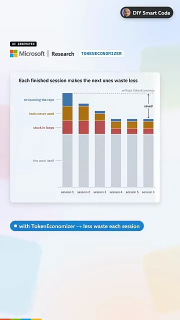
낭비를 줄이는 세 가지 장치
장치는 세 개이고, 모두 같은 틀을 따라요. 증거가 쌓이면 움직이고, 틀렸을 때 되돌릴 길이 있어요. 영상이 슬라이드 세 장에 나눠 보여 준 내용을 한 그림에 모았어요.
마이크로 스킬: 저장소 사실을 기억해요
영상의 예시는 일반 pytest가 없고 python -m pytest만 되는 저장소예요. 세션마다 여기서 한 번씩 넘어져요. 화면 아래쪽 동그라미 세 개를 보면, 세션 3개가 확인해야 사실로 올라가요. 세 번째가 빨간색으로 바뀐 칸은 '반박되면 버린다'는 규칙을 보여 줘요.
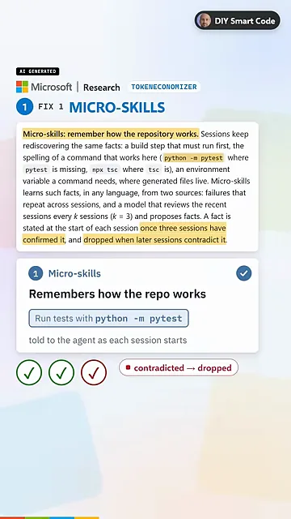
도구 가지치기: 안 쓰는 도구를 빼요
불러온 도구의 정의는 요청마다 함께 나가요. 카드 속 Read와 Edit는 남고, 취소선이 그어진 Notebook과 Browser는 빠졌어요. 조건은 숫자 카드에 있어요. 세션 2개에 걸친 프롬프트 10개 동안 쓰지 않아야 해요. 슬라이드 본문에는 길이와 상관없이 세션 5개 동안 안 써도 뺀다는 조건도 있어요.
빼는 방법도 에이전트 자체 설정을 쓰는 거예요. 맨 아래 .claude/settings.local.json이 Claude Code에서 그 설정이 들어가는 파일이에요. 명령 하나로 되돌릴 수 있어요.
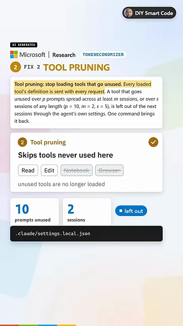
루프 가드: 막힌 턴에 끼어들어요
턴이 같은 실패를 계속 겪으면 판정 모델이 정말 멈춘 상태인지 봐요. 화면의 ≥70% 카드가 기준이에요. 이 정도 확신이 들면 파란 라벨처럼 다른 방법을 쓰라는 짧은 메모를 한 번만 넣어요.
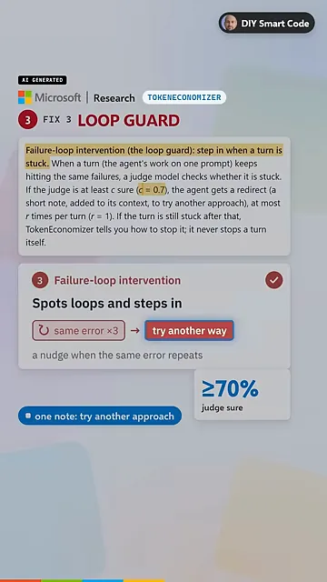
그래도 막혀 있으면 아래 회색 박스 같은 한 줄이 떠요. 판정 확신도(0.82)와 도구 호출 수(46)를 보여 주고 Esc를 누르라고 안내해요. 턴을 끊을지는 사람이 정해요.
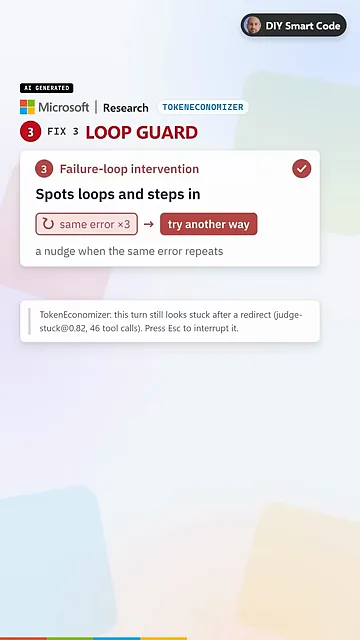
효과, 한계, 설치
실험 결과
맨 위 숫자 카드가 실험 규모예요. SWE-Bench 작업 277개, 저장소 6개, 에이전트×모델 5개 조합이에요. 아래 막대는 조합별 평균 절감률이고, 플러그인 자체의 모델 호출 비용까지 포함한 값이에요. 30/30은 저장소 6개와 조합 5개로 만든 30칸 모두에서 기본 실행보다 쌌다는 뜻이에요.
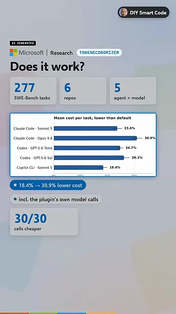
값이 싸졌는데 성능은 어떨까요. Pass@1은 다섯 조합 중 네 곳에서 올랐어요. 나머지 하나가 아래 화면에 표시된 Claude Code + Opus 4.8이에요. 비용을 가장 많이 줄였지만 Pass@1이 1.0점 떨어졌어요. 화면 위 막대와 아래 점 그래프를 표로 옮기면 이래요.
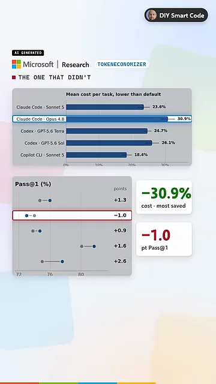
| 에이전트 · 모델 | 평균 비용 절감 | Pass@1 변화 |
|---|---|---|
| Claude Code · Sonnet 5 | 23.6% | +1.3점 |
| Claude Code · Opus 4.8 | 30.9% | −1.0점 |
| Codex · GPT-5.6 Terra | 24.7% | +0.9점 |
| Codex · GPT-5.6 Sol | 26.1% | +1.6점 |
| Copilot CLI(Command Line Interface) · Sonnet 5 | 18.4% | +2.6점 |
영상이 짚은 한계 두 가지
첫째, 빨간 도장에 적혔듯 저자들이 직접 잰 숫자예요. 둘째, 아래 막대 두 개를 비교해 보세요. 기록이 있는 저장소는 18~31%인데, 작업마다 새 저장소인 보안 벤치마크는 6~20%로 줄어요. 파란 라벨대로 배울 기록이 있어야 효과가 커요.
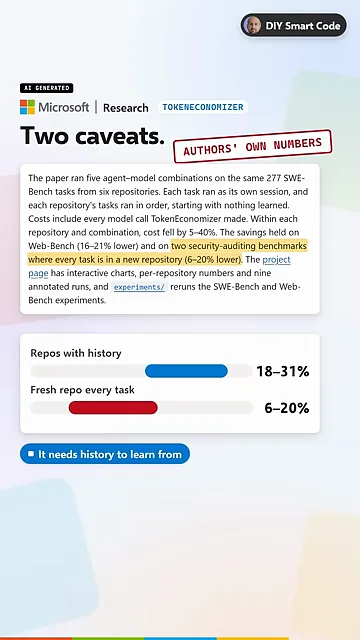
설치와 써 보는 법
Claude Code와 Codex 칸에 각각 명령이 세 줄씩 있어요. 저장소를 클론하고, 플러그인 마켓플레이스로 등록하고, 플러그인을 설치해요. 노란 표시대로 별도 API(Application Programming Interface) 키가 필요 없고, 배운 내용은 내 컴퓨터에 남아요. 맨 아래 스위치처럼 마이크로 스킬은 꺼진 채로 설치돼요.
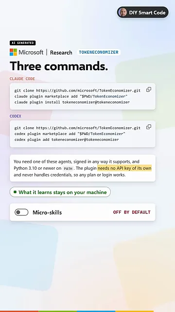
plugin install, Codex는 plugin add예요.
영상 02:32에서 보기
git clone https://github.com/microsoft/TokenEconomizer.git
claude plugin marketplace add "$PWD/TokenEconomizer"
claude plugin install tokeneconomizer@tokeneconomizer영상의 권장은 간단해요. 같은 저장소에서 Claude Code나 Codex를 매일 쓴다면 기본값으로 일주일 돌려 보세요. 그다음 화면의 검은 칸에 있는 상태 명령으로 얼마나 아꼈는지 확인하면 돼요.
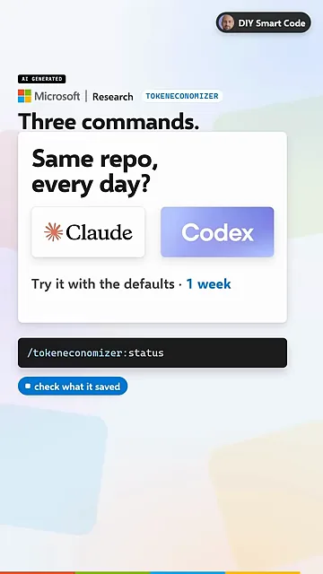